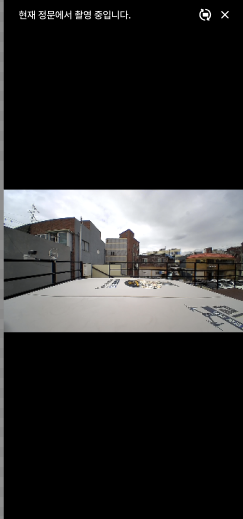
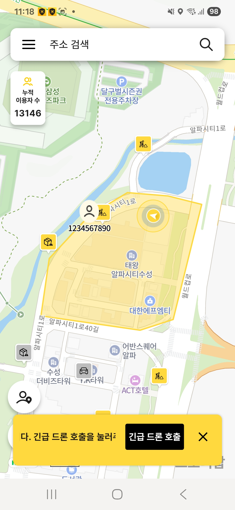
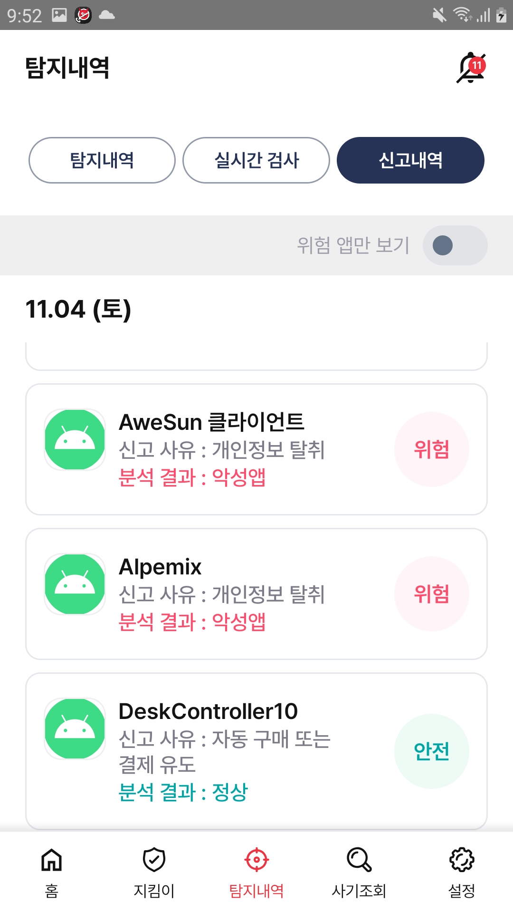

UI 구현
사용자 흐름을 고려한 화면을 Compose 기반으로 구현하고, 상태 변화에 맞춰 일관된 UI를 만듭니다.
- Kotlin · Android SDK
- Jetpack Compose · Material 3
- Glance App Widget
ANDROID DEVELOPER
Android 환경에서 사용자 흐름을 고려한 화면을 설계하고, 상태 관리와 API 연동을 통해 안정적인 서비스를 구현합니다. 출시 이후에는 사용자 피드백을 바탕으로 기능을 개선하며, 코드의 유지보수성과 확장성까지 함께 고민합니다.
01 / CORE COMPETENCIES
사용자 흐름을 고려한 화면을 Compose 기반으로 구현하고, 상태 변화에 맞춰 일관된 UI를 만듭니다.
기능 변화와 유지보수를 고려해 관심사를 분리하고, 테스트 가능한 코드 구조를 설계합니다.
서버와 로컬 데이터를 안전하게 연결하고, 비동기 처리 흐름을 UI에 반영합니다.
출시 후에도 기능 개선과 유지보수를 이어가며 사용자 요구를 제품에 반영합니다.
02 / PROFESSIONAL EXPERIENCE
모바일개발부 · 사원
어린이 안전 서비스의 실시간 호출·순찰·위치 추적 기능을 개발하고, Flutter 기반 화면 개선과 API 연동을 담당했습니다.
보안솔루션부 · 연구원
악성 앱 탐지·차단과 번호 차단 기능을 개발하고, AI·KISA 데이터를 활용한 기능 개선 및 유지보수를 수행했습니다.
개발2팀 · 사원
두산 퓨얼셀 관련 프로젝트의 기능 개발과 유지보수를 수행하며 실무 개발 프로세스를 경험했습니다.
03 / SELECTED PROJECTS


COMPANY PROJECT
어린이의 안전한 귀가를 돕는 드론 기반 실시간 안전 모니터링 서비스
Android 개발 · 기여도 70%
실시간 드론 호출, 순찰 상태, 위치 추적, 위험요소 표시, REST API 연동
Android · Kotlin · Flutter · Riverpod · REST API

COMPANY PROJECT
악성 앱과 위험 전화를 탐지·차단해 모바일 보안을 강화하는 서비스
Android 개발 · 연구원
악성 앱 탐지·차단, 번호 차단, AI 탐지 결과 UI, Compose 화면 개선
Kotlin · Jetpack Compose · Coroutines · Retrofit2 · Clean Architecture
SIDE PROJECT
아티스트 콘텐츠를 Android 홈 화면에서 즐기는 개인화 포토 위젯 서비스
기획 · 디자인 · Android 개발
Compose 이미지 상태 UI, Coil 캐시·리사이징, Bitmap 기반 위젯 렌더링
Kotlin · Compose · Glance · Coil · DataStore · Supabase